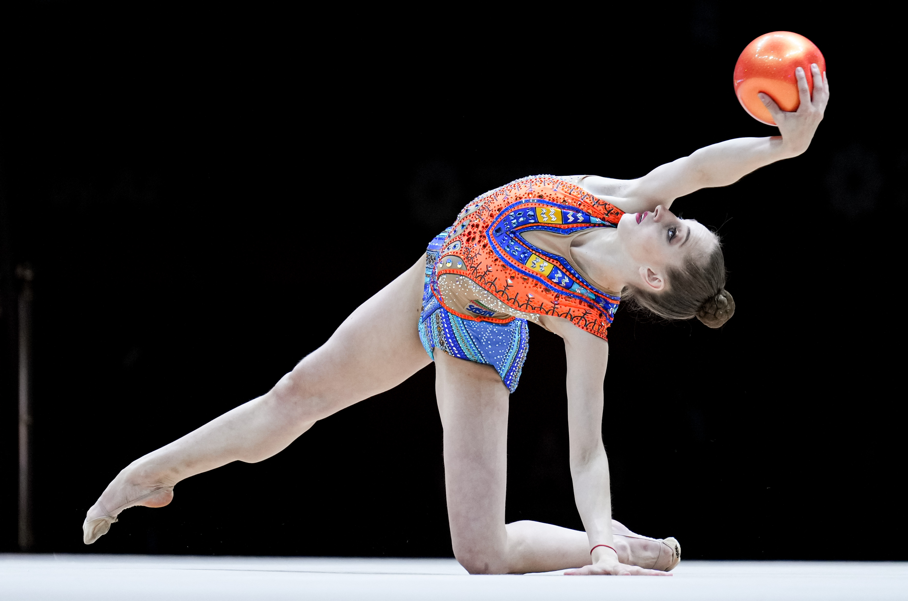

What is Rhythmic Gymnastics?
Rhythmic gymnastics is an Olympic sport that is a mix of Ballet, dance, and acrobatics with 5 apparatuses.

Apparatuses
- Rope
- Ball
- Hoop
- Clubs
- Ribbon
Groups
In Rhythmic gymnastics you can be an individual gymnast performing
four separate routines with multiple apparatuses, or you can be in a
group and compete together.
There is a sertain amount of people you can have in your group which
depends on what level you are in.
For Junior and Age-Group or Interclub Competitions you can have 2 to 5
gymnasts in your routine. But if your an Official FIG, Olympic, or in
Senior National Levels you have to have 5 poeple in your routine or an
aditional gymnast as a reserve/alternate.
Levels
There are different levels you can be in.
blabla bla